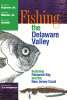

Fishing tales from the Delaware Valley
Fishing tales from the Delaware Valley


 Fishing tales from the Delaware Valley
Fishing tales from the Delaware Valley

|  |
Fishing the Delaware ValleyGeorge H. Ingram, Jr., Robert F. Marler, Jr. and Robert R. Smith, foreword by Joe Humphreyspaper EAN: 978-1-56639-665-3 (ISBN: 1-56639-665-4) |
"Despite the plethora of piscine literature," say the authors of Fishing the Delaware Valley, "we have tried to create a book unlike anything else on the market. With our approach that fishing is a major entertainment endeavor and that it is a family activity that can be pursued within fascinating historical and culinary settings, we have tried to demonstrate that, most important, fishing is serious fun."
The Delaware River is the last major free-flowing river in the eastern United States. Drawing on their cumulative century of angling experience, the authors range through the 14,000 square miles of the Delaware River watershed, with offshore visits for saltwater fishing along the New Jersey coast. All the places they talk about are within three-and-a-half hours of Philadelphia by car.
Besides giving directions to their favorite spots, the authors regale the reader with comments about what to expect of each place and how to make the most of your visit. Along the way they mention and frequently evaluate nearby tackle shops, restaurants, taverns, historical and scenic attractions, and even shopping opportunities.
Throughout, they share their own experiences with the reader—both the pride of spectacular catches and the embarrassment of spectacular follies. One of the authors admits to breaking a new rod in a restroom door. Another tells about having to be rescued from a mid-river rock by the very anglers to whom he had just bragged about his accomplishments. They spice their descriptions with apt quotations and finish it off, like a truly successful fishing day, with their favorite recipes.
This is a book with something for everyone, from the novice to the expert. Even non-fishing friends and family members will welcome the authors' suggestions for things to do while waiting for their loved one to land the perfect trout or will be entertained by the stories about those incomprehensible people who flock year-round to the Delaware Valley's lakes, ponds, streams, and coastal waters.
Excerpt available at www.temple.edu/tempress
"A well-written guide to sandwich joints in Eastern Pennsylvania and New Jersey, with almost as much information about nearby fishing holes."
—Philadelphia Magazine
"This book, written by a Temple University administrator and two retired colleagues, has a little bit of everything: commentary on the authors' favorite fishing spots, evaluations of tackle shops, advice on nearby attractions where nonfishing family and friends can pass the time, and restaurant recommendations in case you don't get any keepers."
—New York Times
Foreword
Introduction
1. Some Basic Principals
2. Freshwater Fishing in Northeastern Pennsylvania
3. Freshwater Fishing in Northern New Jersey
4. Freshwater Fishing in South Jersey
5. The Delaware Bay
6. Coastal Saltwater
7. Crabbing
Appendix
Index
 | George H. Ingram, Jr. is a Temple University administrator and freelance outdoors writer who lives on the Delaware and has published hunting and fishing articles in the New York Times, the Wall Street Journal, the Philadelphia Inquirer, Pennsylvania Game News, and other magazines and newspapers. |
 | The late Robert F. Marler, Jr. retired as a Temple University professor of English in 1994 after teaching at the institution for twenty-eight years. A long-time fly fisher, he lived on a farm in Benton, Pennsylvania, not far from Fishing Creek, with his wife, Jan, daughter, Mary Beth, and an aging Chevy pickup truck. |
 | Robert R. Smith retired as Dean of the School of Communications and Theater at Temple University in 1996, after serving in that position for almost eighteen years. An avid fisher, he is an authority on the literature of fly fishing who now resides on Trout Farm Lane in Plympton, Massachusetts, with his wife, Suzanne. |
Philadelphia Region
Sports
Nature and the Environment
© 2015 Temple University. All Rights Reserved. This page: http://www.temple.edu/tempress/titles/1186_reg.html.